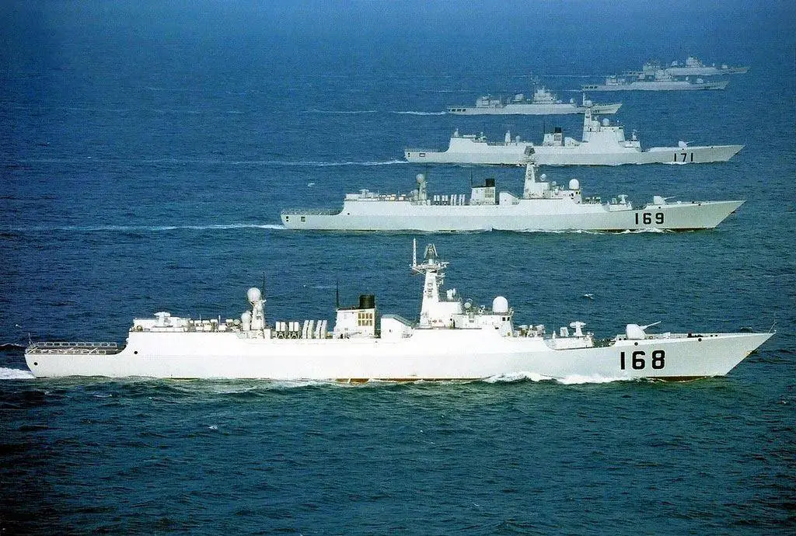
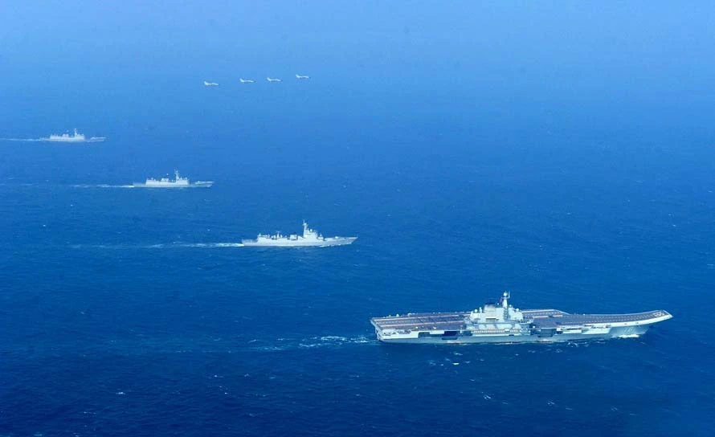
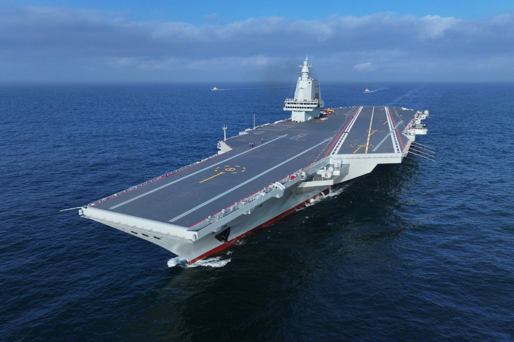

海军编成
舰艇部队
海军舰艇部队是以水面舰艇为基本装备，在水面遂行作战任务的海军兵种。可攻击敌方海上和沿岸及其一定纵深内的目标，参加争夺制海权的斗争，进行海上封锁、反封锁作战，参加登陆、抗登陆作战，保护或破坏海上交通线等。
中国海军水面舰艇部队，兵力包括导弹驱逐舰、导弹护卫舰、导弹艇、猎潜艇、扫雷舰、登陆舰和各种勤务舰船等，它们的任务是消灭敌舰船，破坏敌岸上目标，输送登陆兵员，以及进行海上巡逻、警戒、反潜、布雷、护航、救生等 。中国海军舰艇英文前缀，采用CNS（Chinese Naval Ship） 或PLANS（PLA Navy Ship）。
中国海军下辖舰队：
- 北海舰队
- 东海舰队
- 南海舰队
北海舰队是中国人民解放军海军三大舰队之一，其前身为华东解放军海军支队，是中国人民解放军海军最早的海军部队。是中国海军拥有核动力弹道导弹潜艇的队伍。司令部设于山东省青岛市。下辖青岛基地（辖威海、胶南水警区）、旅顺基地（辖大连、营口水警区）、葫芦岛基地（辖秦皇岛、天津水警区）。其中葫芦岛基地为核潜艇母港。北海舰队负责黄海、渤海的防务，主要任务就是守卫北京的海上门户。
东海舰队成立于1949年4月23日，最初以上海作为基地。现司令部设在浙江宁波。下辖上海基地（辖连云港、吴淞水警区）、舟山基地（辖定海、温州水警区）、福建基地（辖宁德、厦门水警区）。东海舰队负责台湾海峡南端（广东南澳岛至台湾猫鼻头连线）以北、连云港以南的东海和黄海海域的防务。
南海舰队司令部设在广东湛江。下辖湛江基地（辖湛江、北海水警区）、广州基地（辖黄埔、汕头水警区）、榆林基地（辖海口、西沙水警区）。南海舰队负责台湾海峡南端（广东南澳岛至台湾猫鼻头连线）的西南方向海域，包括西沙群岛、南沙群岛的防务，维护中国在南中国海的海洋权益和岛屿的防卫。
潜艇部队
潜艇部队是在水下遂行作战任务的海军兵种，具有良好的隐蔽性，较强的突击力，能长期在水下作战，是海军的重要作战力量。中国海军潜艇部队自1954年6月成立独立潜艇大队以来，现已发展成为包括常规动力潜艇部队和核动力潜艇部队在内的强大水下力量。
中国海军潜艇部队的主要任务是消灭敌人的运输船和大中型战斗舰艇，摧毁敌基地、港口和岸上重要目标，还可以进行侦察、反潜、布雷、巡逻和运送物资、人员等。
1951年4月，海军成立潜艇学习队；1952年5月开始修建中国第一个潜艇基地；1954年6月，海军第一支潜艇部队宣告诞生。
作为水下突击兵力，潜艇技术装备先进，配套设施复杂。中国已成为能够自行研制潜艇的少数几个国家之一。人民海军除装备有常规动力潜艇外，还拥有核动力潜艇。航行足迹也已由近海伸向远海直至太平洋。
航空兵部队
海军航空兵部队既有歼击机、强击机、轰炸机、反潜机等作战飞机，又配备了侦察机、巡逻机、救护机、电子战飞机、水上飞机和运输机等各种保障兵力。而且培养出了一批低空、超低空飞行好，攻击命中率高和长途奔袭能力较强的飞行员。
中国海军航空兵的主要任务是消灭敌舰船，破坏敌基地，掩护、支援水面舰艇和潜艇部队的战斗行动，保障海军基地的安全，以及进行侦察、巡逻、反潜、布雷、通信、引导、救生等。
1950年初，海军航空学校建立；1952年6月，第一支海军航空兵部队正式宣告诞生。海军航空兵自成立以来，在与敌战斗中，共击伤、击落敌机204架。人民海军航空兵部队已由初建时的单一机种，发展成为拥有歼击机、强击机、轰炸机、歼击轰炸机、直升机、运输机、水上飞机等多机种和完善地面设施的强大战斗集群，能够完成近海的防空、攻击、侦察、救护、补给等任务。
1980年1月，海军航空兵实现了由岸基向舰载的突破，结束了只能在近海飞行的历史。
岸防部队
中国海军岸防部队，是以岸炮和岸舰导弹为基本装备，部署在沿海重要地段，主要遂行海岸防御作战任务的海军兵种。包括海岸导弹部队和海岸炮兵部队。可突袭敌方舰船，保卫基地、港口和沿海重要地段，扼守海峡、水道，掩护近岸交通线和己方舰船，支援岸导和要塞守备部队作战等。岸防部队主要由岸舰导弹兵、高射炮兵、海岸炮兵等组成，编有岸导团、高炮团等。
海军岸防部队自1950年10月组建以来，单独和协同陆军及海军其他兵种作战400余次，击沉击伤敌舰船70余艘，击落击伤敌机40余架，在巩固海防、保卫近岸交通和渔业生产等任务中发挥了重要作用。
陆战队
海军陆战队是海军的一个独立兵种，它是一支诸兵种合成的能实施快速登陆和担负海岸、海岛防御或支援任务的两栖作战部队，是应付局部战争和军事冲突的拳头，又是联合进攻行动的“尖刀”，在现代战争中举足轻重。
中国海军陆战队的主要任务是独立或配合陆军部队实施登陆作战，夺取登陆点和登陆地段，保障后续梯队登陆。
1953年，为了解放东南沿海岛屿，华东军区以陆军1个步兵团和2个步兵营为基础，组建了海军陆战第1团。1954年12月9日，由陆战团、水陆坦克教练团等合并组成海军第一个陆战师。后因任务变化，于1957年撤销。1979年海军重新组建比较正规的海军陆战部队。1980年5月5日，中国海军首支陆战部队在海南岛组建，成为人民海军作战序列中最年轻的兵种。
海军陆战队现编有陆战步兵、装甲兵、防化兵、两栖侦察兵等兵种，装备有各类步兵自动武器、水陆坦克、两栖装甲运输车、反坦克导弹等武器。
海战纪事
主要作战
- 对国民党军作战
- 对外作战
护航出访
军舰命名
巡洋舰以上：国务院特别命名;
巡洋舰：以行政省（区）或直辖市命名;
驱逐舰：以大、中城市命名;
护卫舰：以中小城市命名;
补给舰：以湖泊命名;
核潜舰：以“长征”加序号命名;
常规导弹潜舰：以“远征”加序号命名;
常规鱼雷潜艇：以“长城”加序号命名；
扫布雷舰：以“州”命名；
猎潜艇：以“县”命名；
船坞登陆舰、坦克登陆舰：均以“山”命名;
步兵登陆舰：以“河”命名；
训练舰：以人名命名;
辅助船艇：以所在海区和性质的名称再加序号命名。
总体评价
中国人民解放军海军，是维护世界和平稳定、服务构建人类命运共同体的坚定力量。技术合作不断深化，提供的国际公共安全产品越来越多。日益强大的人民海军，致力于构建人类命运共同体、海洋命运共同体，正在成为维护地区和海洋安全的重要力量。（中国军网 评）
新时代的中国人民解放军海军，航空母舰、新型战略核潜艇、万吨级驱逐舰、两栖攻击舰、综合补给舰等密集入列，舰载战斗机批量交付，预警机、舰载直升机再添新成员，新型反潜巡逻机补齐了人民海军反潜作战短板。
从小艇到巨舰，从近岸到深蓝，从单兵到体系，以第四代装备为引领、第三代装备为主体的现代化人民海军正在形成，大国战舰向着全面建成世界一流海军破浪远航。（解放军报 评）
